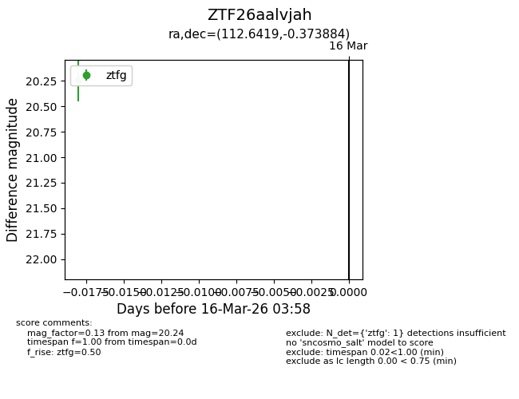
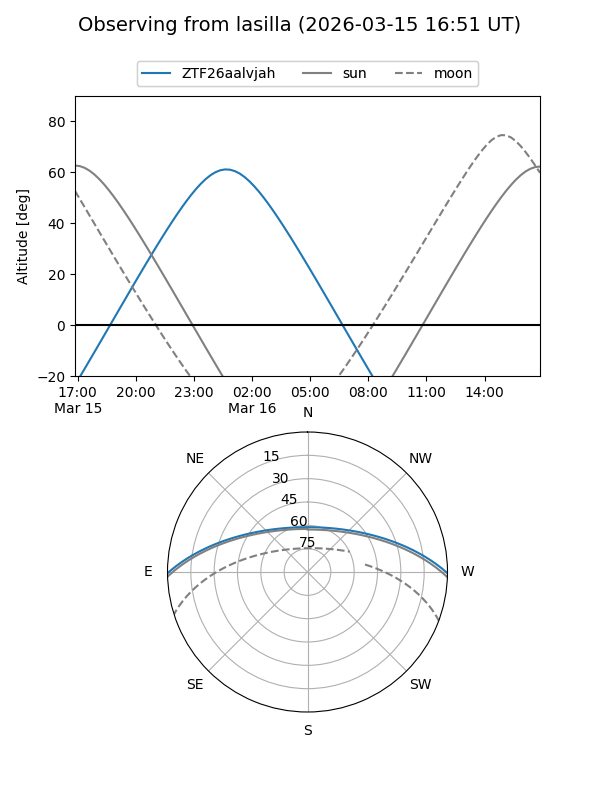
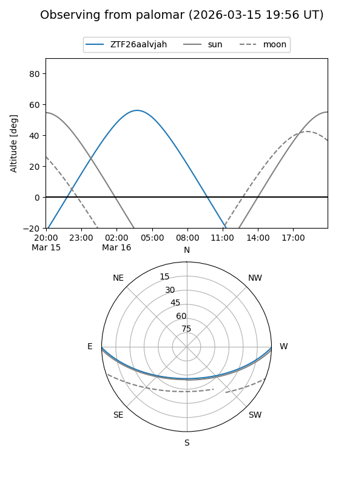

ZTF26aalvjah
Target ZTF26aalvjah at 2026-03-16 04:00
Aliases and brokers:
FINK: link
Lasair: link
ALeRCE: link
alt names
ZTF26aalvjah (ztf,fink_ztf)
Coordinates:
equatorial (ra, dec) = 112.6419,-0.37388
equatorial (HMS+DMS) = 07:30:34.06,-00:22:25.98
galactic (l, b) = (217.7626,+8.52476)
Flags:
Photometry:
last ztfg=20.24
1 ztfg detections
Lightcurve

Visibility


Additional plots